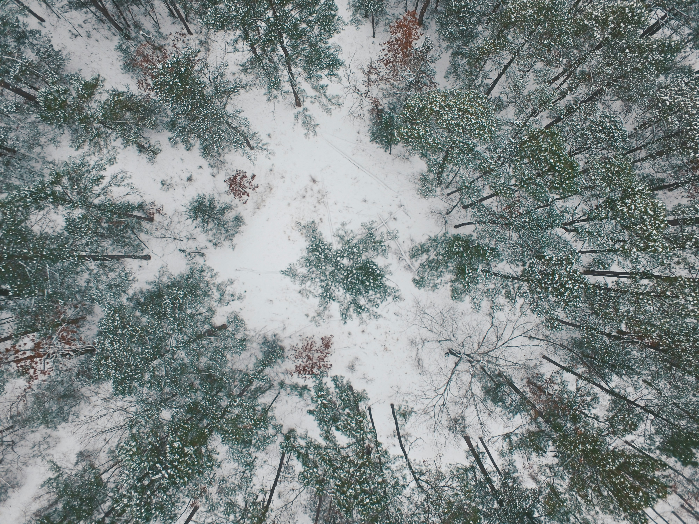

You plop down in the snow and instantly your legs thank you for sparing them from anymore walking.You lean back into the snow, your body carving its own little nook in the pile. You look up into the sky, it's officially nighttime. You decide after 5 minutes you'll get up and continue to walk.
5 minutes turn to 10 minutes. 10 turns into 20. 20 into 40. Eventually, you find yourself there for an hour. You know you must get up, but the snow is starting to feel immensely comfortable. It begins to emmit such a warmth that you take off a layer to make up for the extra heat. This intoxicating feeling of comfort puts you deeper and deeper into a spell. Eventually, you slip away into unconsciousness.
You awake, high up in the air. Freaking out, you frantically begin to scream, believing you are falling. However, you realize you are not going down, but up. Your physical body is nowhere to be found, you are simply a first person perspective.You put two and two together as you look down to find your frozen corpse, which you are unable to find. But you don't care, you feel such a lightness you have not experienced before that you completely forget what it was like being mortal.
Rest easy weary one. Fly away, be free, forever.
You got the Hypothermia ending!
"high angle photography snow covered field with trees" by Ozark Drones.Unsplash Licesne.Unsplash. January 8, 2017